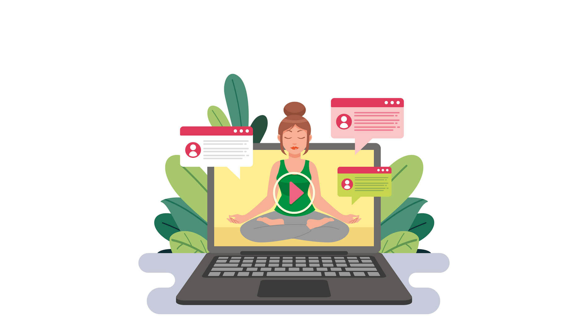

MAS SOBRE NOSOTROS Y INFORMACION DE CONTACTO
NoScreensIT es una empresa emergente que está revolucionando la forma en que interactuamos con la tecnología en nuestra vida diaria. Con un enfoque innovador y un compromiso con el bienestar digital, NoScreensIT desarrolla soluciones que ayudan a las personas a gestionar de manera efectiva el uso de sus dispositivos móviles. A través de aplicaciones interactivas y herramientas basadas en inteligencia artificial, buscamos mejorar la productividad y el equilibrio entre el mundo digital y la vida real. Nuestra misión es promover una experiencia digital más saludable, motivadora y enriquecedora.
Contacto:
📧 Correo electrónico: contacto@noscreensit.com
📞 Teléfono: +34 912 345 678
🌍 Página web: www.noscreensit.com
📍 Dirección: Calle Innovación, 123, Madrid, España
Numero de cuenta bancaria en caso de donaciones: ES12 3456 7890 1234 5678 9012